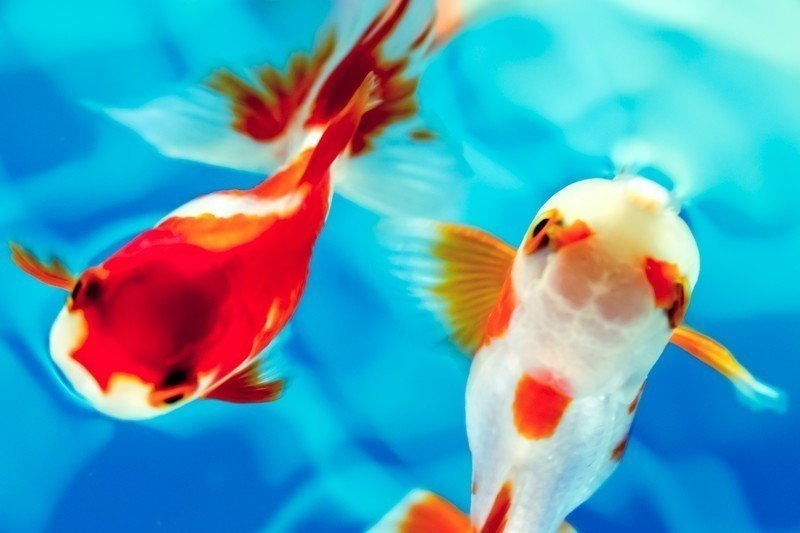

いつも思うことがある。
人間はなんて感情の起伏が激しい動物なのかと。沈んでいるかと思いきや、翌朝目を覚ますと何事もなかったかのように、朝飯を食べ外に出て行く。その夜には何かいいことがあったのか、口笛なんか吹いている。
そんな様子を見ていると「人間も落ち着きのないやつらだな」と思う。
そして、落ち着きのないやつらは人間だけではない。小さくて赤く、そしてひらひらと華麗に泳ぐ生き物もその仲間である。
時々人間は不思議な文字盤を見て、慌てたりする。それが果たして何を表しているのか、最近分かってきた節がある。
未だ推測の域を出ないが、その文字盤は恐らく人間社会の何かを規定する存在だろう。そして、その文字盤らしき針が上と下を同時に指し示すと飼い主は餌をくれる。それも毎回。
だから今まで逃げ出そうと考えたことは一度たりともなかったのだが、私はひょんなことからそこから連れ出され、一生に一度の旅に出ることになった。もちろん一生に一度というのも推測に過ぎないが。
「なぜこんなところにいる？」
数秒沈黙した後、ようやくメイに質問した。
「自力で脱出してきたの。あんなところじゃ息が詰まるでしょ？」
メイはイタズラに笑う。危うくその真偽を見誤るところであったが、そもそも金魚が自力で人間のもとから逃れるなんてできっこない。
冗談はよせ。
そう言い返そうとした。しかし、思い返せば私自身も人の手を借りずに悪者から逃れてきた。結局心優しい人間に助けられたが、そもそもあの牢獄のような空間から逃れることができていなければ、決してここまでこれなかったはずだ。
もしかしたら、メイも同じような経験をしてここに辿り着いたのかもしれない。そんなことを考えていたら、いつの間にかメイを恍惚とした表情で見つめていた。
「いやいや、早くツッコミなさいよ。あたしだけで逃げられる訳ないじゃん」
メイは痺れを切らしたように言った。頭を強く打ちつけたように我に返る感覚が私を襲った。
「あんたの飼い主が助けてくれたの」
「まさか」
にわかには信じがたい。でもメイが嘘をついているようにも見えない。
「どうやらあたしの主人が頼ったらしくて」
メイは呆れた顔をした。
「金魚ハンターに騙される方も救いようがないけど、頼まれたら断れない性格も大概よね」
メイは恩人であるはずの飼い主を糾弾し始めた。しかし、それにはメイなりの愛があるようにも感じられた。
メイは当時の状況を教えてくれた。
いい大人にもなって自分探しの旅に出た飼い主は、自分の財布をすった女の頼みを聞き入れ、あの手この手で金魚ハンターのアジトを突き止めた。飼い主はらしくもなく武装でもしたのかと思ったが、武道に長けている友人たちに頼みこみ、悪い輩はそやつらによって一網打尽。やがて金魚ハンター属する連中は警察に連れて行かれた。その後、女が膨大な数の水槽から無事にメイを見つけ出したという訳だった。
「あんたの飼い主が何度も自慢するものだから、頭から離れなくなっちゃった」
メイは苦笑いする。
「自慢する割には、特段あいつは活躍してないように思えるが」
「お人好しなだけね。でも、その人柄があたしの主人をまた引き寄せたんだからいいんじゃない？」
メイが意味深なことを呟いた時、ガチャンと鍵が開く音がした。部屋に入ってきたのは、メイの主人で飼い主の財布をすったあの女だった。
「どうやらあの二人、よりを戻したみたいね」
開いた口が塞がらなかった。
「あんたの飼い主がプロポーズしたの。本当に懲りない人」
頭を上下に大きく揺らし、同意した。また以前のように女に裏切られたらどうするつもりなのだ！ 頼むから、もう自殺未遂だけは勘弁してくれよ。その都度、私があいつのために水槽の上空を舞い上がるなど堪ったものではない。
「あと、どうやら足洗ったみたいよ」
女を見てみると、確かに以前より顔のコーティング……いや、化粧は薄くなっていた。
「辞めるよう説得されたみたい。自分だけを見ていてほしいってね」
「そうか」
「あんたたち、似た者同士ね」
「本気で言っているのか？ 解せぬな」
「あたしはいつだって本気よ。嘘は嫌いなの」
さっき冗談を言ったばかりのメイを見ながら、私はぼんやりと飼い主の顔を思い浮かべた。何だか私はまた飼い主の思わぬ男らしさに刺激を受けていた。
全く予想のできない人間だ。まるでのたうち回る怪物……いや、何にも縛られず自由に生きる「何者か」のようだ。
「ともに生きよう」
無意識にそう言っていた。メイはらしくもなく、顔を赤くした。
私は確かに何かに突き動かされていた。その何かとは、やはりあのしょうもない飼い主だった。
メイは真っ直ぐ私を見ている。
「顔赤いよ」
「元々こういう顔なのだ」
メイは照れ隠しをするかのようにそう言ったが、すぐさま頷いて私の愛の告白を受け入れた。
「メイちゃんゴハンよー」
何でもない休日の昼下がり。私はすっかり穏やかな日常を取り戻していた。
女が以前と同じように水槽に餌を振り撒くと、メイも以前と同じように私の分など考えず、全ての餌を食べ尽くしてしまう。
「そういやあなたの金魚、名前なんだっけ？ 前聞いたけど忘れちゃった」
女は飼い主に向かって聞く。飼い主はらしくもなく新聞を読みながらしばらく考え込み、ようやく「ジャックス！ ジャックスさ」と答えている。
飼い主よ、お前確実に自分でつけた名前を忘れていただろう。
「あんた、そんな名前だったんだ」
メイは口いっぱいに含んだ餌を咀嚼しながら私を見ている。私はいつものようにため息をついた。
きっとこれから先もこんなため息をつくのだろうが、飼い主と女、そしてメイと私が同じ屋根の下で暮らしていければそれでいい。その暮らしが、やがて真実の愛を育むと信じて。
「じゃこれからはジャックスって呼ぶね！ これからよろしく、ジャックス！」
メイは満面の笑みで言う。その笑顔だけで満足してしまいそうだった。でも、言い返す必要があった。そもそも、そんなださい名前は嫌なのだ。
最近、決めたことがある。
それは、ありのままを告白する。そうやって日々を生きていこうと。それが「誰かとともに生きる」ことなのだと私は信じて疑わない。
そんな覚悟ができたのも、あの旅で出会ったかけがえのない仲間がいたからである。彼らとともに心を一つにして巨大な壁を乗り越えることができたからこそ、私はただ日和見して様子を窺うことには意味がないと思えた。なんたって私は、物事の形勢なんて強い意志があればいくらでも覆せることを肌で感じたのだから。
吸い込まれそうなほど綺麗なメイの目をはっきりと見た。
そして、不器用でろくでもないが、間違いなく私の飼い主であるあの男にもどうか伝わってくれと強く願いながら、こう告白した。
名前なんかいらない。
何にも縛られず、自由に泳いでいたいのだ。(了)